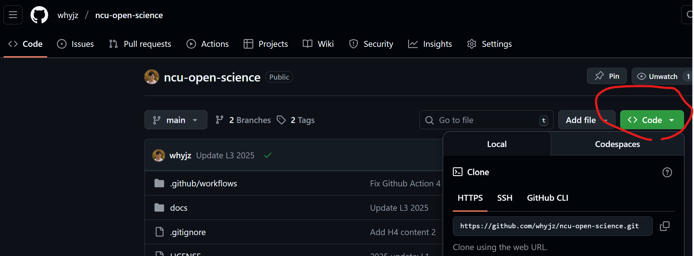
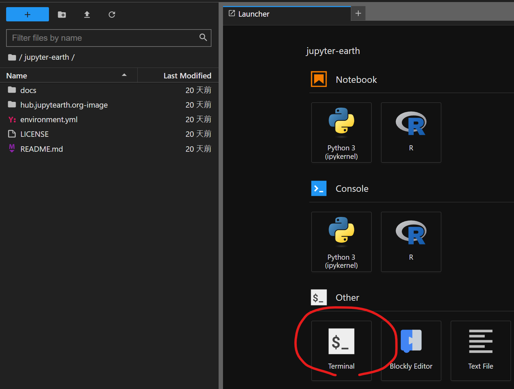
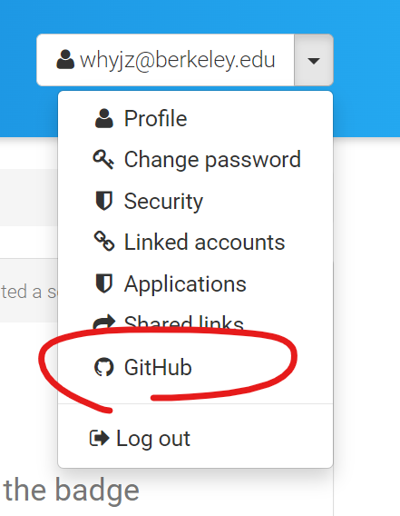
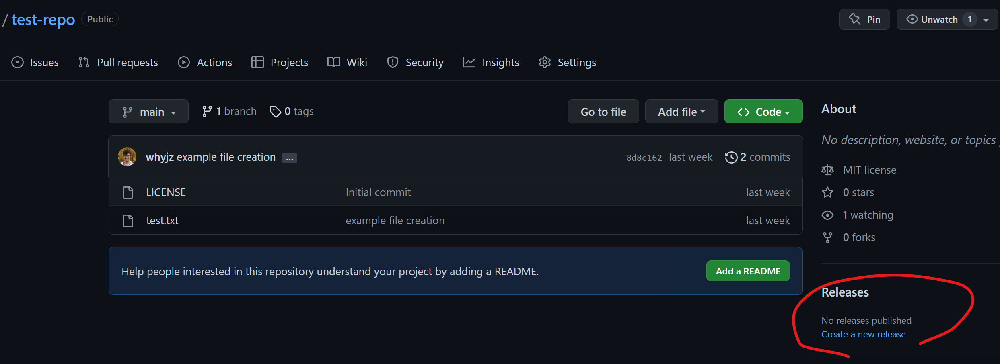

FAIRly share your data and code#
This tutorial will show you how to code with Git and GitHub as preparation for the next hands-on practice. We will also introduce some FAIR-compliant data repositories and explore how they work.
1 | Git#
Git is an open-source, distributed version control system, which means it can manage a project between different versions for speedy and collaborative development.
🛠️ Clone a GitHub repository to your working environment#
🚩 Task: Go to your Github repository page you created from the last hands-on session. It has this URL convention: https://github.com/[your_ID]/[your_repository_name]. Click the green Code button to show the clone path. To start simply, we use the HTTPS version with the following naming convention: https://github.com/[your_ID]/[your_repository_name].git. We will use this path in the next task.

🚩 Task: Log into Callysto Hub (or other other working environment you prefer). Open a terminal window. The figure below shows how to open it using the JupyterLab interface. (The blue button with a plus sign in the figure opens the launcher page.)

🚩 Task: On the terminal window, clone the target GitHub repository:
git clone https://github.com/[your_ID]/[your_repository_name].git
Once done, you should see a new folder in the left panel (file browser) that shows the repository name. You have now copied and linked the repository content from GitHub to Callysto Hub.
❓ Question: After you have cloned the repository, navigate (cd) to the repository folder and enter the prompt git status. What does the resulting message mean?
🛠️ Make commits#
Once you have new content in the repository, we can tell Git to track the change. This is an action called a “commit.”
🚩 Task: Create a Notebook file called commit_test.ipynb and add the following content to a markdown cell:
# Title
## Section 1
## Section 2
### Section 2.1
🚩 Task: If this is your first time committing a change in a new working environment, you will need to configure the following information prior to a commit:
git config --global user.name "YOUR NAME"
git config --global user.email "YOUR.EMAIL@some.domain.edu"
git config --global core.editor "nano"
❓ Question: Enter the prompt git status. What does the resulting message mean?
🚩 Task: Stage new content by the following command for a commit: (Make sure your terminal is at the root directory of the repository before doing this!)
git add .
❓ Question: Enter the prompt git status. What does the resulting message mean?
🚩 Task: Commit new content by the following command:
git commit
🛠️ Push the changes to GitHub#
Now is the time to update the remote repository with the new changes (aka to “Push”).
🚩 Task: Create a Github personal access token for the https access security purposes. Either a fine-grained or a classic access token works. I recommend using a fine-grained token first. For permissions, select “Contents” and “Workflows” and change the access type to “Read and write” for both permissions.
🚩 Task: Go back to the repository folder on Callysto Hub and enter the command below in the terminal:
git push
Enter your GitHub username and the access token. After the push is done, the new changes (commit_test.ipynb) will be available on Github for anyone to check.
2 | Zenodo#
Zenodo is an open repository designed to host a wide range of research materials, including but not limited to data, code, images, presentations, papers, and documentation. Zenodo is operated by CERN under the EU/EC OpenAIRE program.
🛠️ Zenodo upload#
🚩 Task: Register a Zenodo account. You can use your GitHub/ORCID account to register a Zenodo account if you have one or are creating one. What is ORCID?
🚩 Task: Log into Zenodo and click the plus icon at the upper right corner. Select “New upload.” Explore the data submission form and answer the following questions.
❓ Question: What standard licenses does Zenodo provide? Do you need the copyright statement if you select a CC license?
❓ Question: Who are creators? Who are contributors?
🛠️ Zenodo x GitHub#
🚩 Task: Link your GitHub account to Zenodo. You should be able to do this under the settings menu. Once you are done, navigate to “GitHub” through the main dropdown menu and answer the following question.

❓ Question: What are the three steps for your GitHub repository to be registered and archived with DOIs using Zenodo’s service?
If you want to create a release…#
When you are ready to archive the repository on Zenodo, you can create a release on GitHub via this button:

After a release is created, Zenodo will take a short while (a few minutes to a few days) to register it. Once it is done, you should be able to see your repository files on Zenodo with a DOI.
3 | More resources#
NCU’s Taiwan Polar Institute (TaiPI) also has a data repository service called TaiPI-Data.
Documentation: https://taipidata.ncu.edu.tw/docs/1-submission.html
Submission portal: https://taipidata.ncu.edu.tw/submit